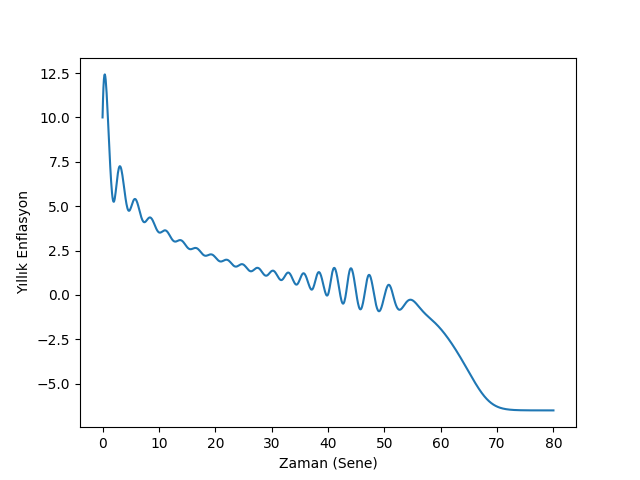
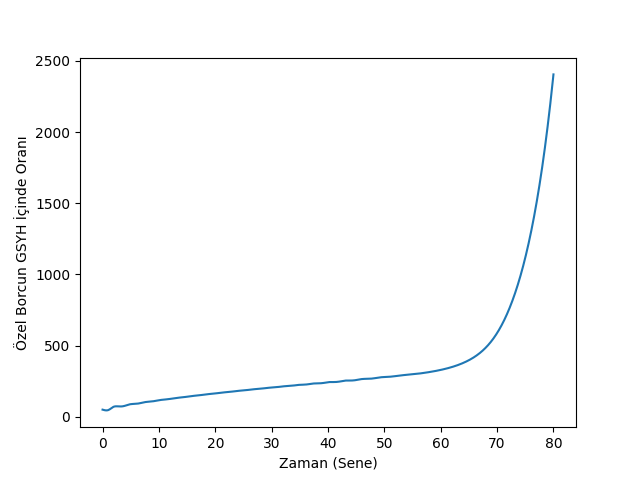

Şimdi fiyatları ekonomi modeline dahil etmeye uğraşalım. Daha önce yaptığımız gibi ekonomik tanımları, önkabulleri formülsel olarak ortaya koyacağız, ve ortaya çıkan modeli çözeceğiz. Tanımları ortaya koyalım,
%"Employment rises if the growth rate exceeds population growth and labor productivity.''
"Eğer büyüme oranı nüfus artışı ve işçi üretkenliğinin toplamını geçerse istihdam artar''
\[ \frac{\dot{\lambda}}{\lambda} = \left( g - (\alpha + \beta) \right) \]
\(\alpha + \beta\) işçi üretkenliği ve nüfus artışı.
\(g\) büyüme oranı. Bu \(g\) gerçek büyüme hızı, yatırım hızı ve onun amortismanı üzerinden hesaplanır.
%"Wage share rises if money wage demands greater than labor productivity and %the inflation rate''
"Eğer ücretlere giden para talebi işçi üretkenliği ve fiyat artışı / enflasyondan fazlaysa işçi ücretlerinin payı artar''.
\[ \frac{\dot{\omega}}{\omega} = \left( (\underbrace{w_{fn}(\lambda)}_{A} - \underbrace{\alpha}_{B}) + \frac{1}{\tau_p} \underbrace{\left( 1-\frac{1}{1-s} \cdot \omega \right)}_{C} \right) \]
A: İşçi ücret payı %Wage share
B: İşçi üretkenliği %Labor productivity
C: Enflasyon %Inflation
% "Debt ratio will rise if debt growth rate is greater than real growth % rate plus inlation''
"Eğer borcun artma hız gerçek büyüme hızı artı enflasyondan fazlaysa ekonomideki özel borç oranı artar''.
\[ \frac{\dot{d}}{d} = \underbrace{\frac{\left( \frac{I_{fn}(\pi_r)}{v} \right) - \pi_s }{d}}_{A} - \left[ \underbrace{g }_{B}+ \underbrace{\frac{1}{\tau_p} \left(1 - \frac{1}{1-s} \omega\right)}_{C} \right] \]
A: Borç büyüme hızı, \(I_{fn}\) gayrı-lineer yatırım fonksiyonu %Debt growth rate
B: Gerçek büyüme hızı %Real growth rate
C: Enflasyon
Enflasyon nasıl hesaplandı? Bunun için fiyat seviyesi \(P\)'yi anlamak lazım, çünkü enflasyon fiyat seviyesinin zamana göre türevidir, \(\mathrm{d} P/\mathrm{d} t\).
Fiyat seviyesi arz-talep dengesi üzerinden hesaplanabilir [2], dikkat bu tüm ekonominin dengesi değil, satılanların alındığı dengesi. Oradan başlıyoruz sadece, bu durumda çıktı \(Q\) fiziksel talep \(D\)'ye eşittir. Üretim \(Q = a \cdot L\), işçi üretkenliği çarpı işçi sayısı. \(L\)'yi hesaplamak için maaşlara akan para bölü maaşlar.
\[ L = (1-s) \frac{F_D / \tau_s}{W} \]
\(F_D/\tau_s\) GSYH'dir, \(F_D\) şirketlerdeki para, \(\tau_s\) onun ekonomide, o şirketlerde ne kadar devridaim ettiği, mesela senede 3 kere, ki bu o paranın etkisini (ve GSYH'yı) 3 kat arttırır, sonra bunu \(1-s\) ile çarpıyoruz ki bu sayı işçilerin payıdır, bu çarpım o zaman ücretlere akan parayı bulacak. Bu sayıyı birim maaş \(W\)'ye bölünce kaç kişinin çalıştığını elde ediyoruz. Demek ki üretimi
\[ Q = a \cdot (1-s) \frac{F_D / \tau_s}{W} \]
ile temsil edebilirim.
Fiziksel talebe gelelim, bu büyüklük talebe giden para akışı bölü fiyat seviyesi, yani harcamalar bölü \(P\). Söylemek istediğimiz şirketlerin ürettiği artı değerin fiyat seviyesi üzerinden kâra / paraya çeviriliyor olduğu. Harcamalar yine GSYH ile gösterilebilir, yani \((F_D / \tau_s) / P\). Dikkat edelim şimdi \(1-s\) yok, 1 var, işçi ve şirket talebini birbirine eklemiş oldum.
Şimdi \(D\) ve \(Q\)'yu birbirine eşitleyip \(P\) için çözebiliriz,
\[ a \cdot (1-s) \frac{F_D / \tau_s}{W} = \frac{(F_D / \tau_s)}{P} \]
\(F_D,\tau_s\), iptal olur, tekrar düzenleriz ve geriye kalan,
\[ P = \frac{1}{1-s} \frac{W}{a}\]
Şimdi bu formülü dinamik bir hale çevirelim, yani belli bir süre sonra \(P\)'nin üstteki değere yaklaştığı durumu gösterelim, 1. derece diferansiyel denklem ile bu durumu tarif edebiliriz,
\[ \frac{\mathrm{d} P}{\mathrm{d} t} = \frac{-1}{\tau_p} \left( P - \frac{1}{1-s} \frac{W}{a} \right) \]
Yani anlık \(P\) iki üstteki bulduğumuz fiyat seviyesinden uzaktaysa, aradaki fark oranında \(P\) o seviyeye yaklaşacak. \(\tau_p\) mühendislikten bilinen bir kavram, yüzde 63 oranına yaklaşımın kaç günde olduğunu gösterir / ayarlar. Genel diferansiyel denklemleri hatırlarsak mesela
\[ \frac{\mathrm{d} x}{\mathrm{d} t} = k(10-x)\]
türündeki bir denklemin çözümünün \(x = 10 - C e^{-kt}\) olduğunu biliyoruz (yerine koyup kontrol edebiliriz) ki 10 ulaşılmaya çalışan sayı, \(k\) ona ne hızda erişileceğini kontrol ediyor. \(t=0,x=0\) için \(C=10\), o zaman \(x = 10 (1 - e^{-kt})\) olabilir. Genelleştirip \(k\) yerine \(1/\tau\) kullanabilirdik,
\[ x = x_{max} (1-e^{-t/\tau}) \]
\(t=\tau,x_{max}=1\) yapalım, \(1-e^{-1}\) elde ederiz,
print 1-np.exp(-1)0.632120558829İşte \(\tau\) değeri ulaşılmaya çalışan değerin kabaca yüzde 63'üne gelmek için geçmesi gereken gündür tanımı buradan geliyor.
Nihai denklemler,
\[ \frac{\dot{\lambda}}{\lambda} = g - (\alpha + \beta) \]
\[ \frac{\dot{\omega}}{\omega} = \left( (w_{fn}(\lambda) - \alpha) + \frac{1}{\tau_p} \left( 1-\frac{1}{1-s} \cdot \omega\right) \right) \]
\[ \frac{\dot{d}}{d} = \frac{\left( \frac{I_{fn}(\pi_r)}{v} \right) - \pi_s }{d} - \left[ g + \frac{1}{\tau_p} \left(1 - \frac{1}{1-s} \omega\right) \right] \]
\[ g = \frac{I_{fn}(\pi_r)}{v} - \delta_{Kr} \]
Farkettiysek nüfus, üretkenlik için \(N,a\) değişkenleri bu sistemde yok, çünkü bu kavramlar modelde sadece sabitleri üzerinden dahil edildiler.
import scipy as sp
from scipy.integrate.odepack import odeint
def rhs(u,t,alpha, beta, delta, nu, r_b, s, tau_p, tau_i, x_i, y_i, s_i, m_i, x_w, y_w, s_w, m_w):
lam, omega, d, i = u
r=r_b;
if i>0: r=r+i;
p=1.0-omega-r*d;
f=-(1.0/tau_p)*(1.0-omega/(1.0-s));
I=(y_i-m_i)*np.exp(s_i*((p/nu)-x_i)/(y_i-m_i))+m_i;
W=(y_w-m_w)*np.exp(s_w*(lam-x_w)/(y_w-m_w))+m_w;
return [( ((1.0/nu)*I-delta) -(alpha + beta) )*lam, \
( W - (alpha+f) )*omega, \
( I-p ) -( (1/nu)*I - delta + f )*d,\
-(1.0/tau_i)*(i-f)]
alpha=0.025;
beta=0.015;
delta=0.07;
nu=3.0;
r_b=0.04;
s=0.3;
tau_p=1.0;
tau_i=0.5;
x_i=0.03;
y_i=0.03;
s_i=2.25;
m_i=0;
x_w=0.6;
y_w=0.0;
s_w=1.0;
m_w=-0.04;
# baslangic degerleri
lambda0=0.65; # istihdam
omega0=0.82; # maaslarin gsyh'eki orani
d0=0.5; # borc orani
i0=0.1; # enflasyon orani
arg0 = (alpha, beta, delta, nu, r_b, s, tau_p, tau_i, x_i, y_i, s_i, m_i, x_w, y_w, s_w, m_w)
T=80.0
t=np.linspace(0.0,T,1000.0)
res=odeint(rhs,[lambda0, omega0, d0, i0],t,args=arg0)
lambda1,omega1,d1,i1=res[:, 0],res[:, 1],res[:, 2],res[:, 3]plt.plot(t, 100.0*i1)
plt.xlabel(u'Zaman (Sene)')
plt.ylabel(u'Yıllık Enflasyon')
plt.savefig('chaos_app04_01.png')plt.plot(t, 100.0*d1)
plt.xlabel(u'Zaman (Sene)')
plt.ylabel(u'Özel Borcun GSYH İçinde Oranı')
plt.savefig('chaos_app04_02.png') 
last=500;
x1=100.0*(1.0-lambda1[:last]);
x2=100.0*i1[:last];
x3=100.0*d1[:last];
from mpl_toolkits.mplot3d import Axes3D
from matplotlib import cm
fig = plt.figure()
ax = Axes3D(fig)
ax.plot(x1,x2,x3,'.', zs=0,zdir='z', label='zs=0, zdir=z')
ax.set_xlabel(u'İşsizlik Oranı')
ax.set_ylabel(u'Enflasyon')
ax.set_zlabel(u'Borç Oranı')
ax.view_init(elev=5, azim=250)
plt.savefig('chaos_app04_03.png')Sistemin sayısal çözümünü yapınca olanları görüyoruz (kod [3]'ü baz aldı). Belli bir "büyük ılımlılık" sonrası enflasyon çakılıyor, ve borç oranı tavan yapıyor. 2008 krizinde de aynen böyle olmuştu.
Kaynaklar
[1] Keen, A monetary Minsky model of the Great Moderation and the Great Recession
[2] Greenwich-Kingston PhD students lecture: the logic maths of modelling Minsky (2) http://youtu.be/0Do05hV_Iqo?t=1200
[3] Jelonek, Numerical techniques in MATLAB: differential equations and non-linear dynamics https://warwick.ac.uk/fac/soc/economics/current/modules/rm/notes1/research_methods_matlab_3.pdf